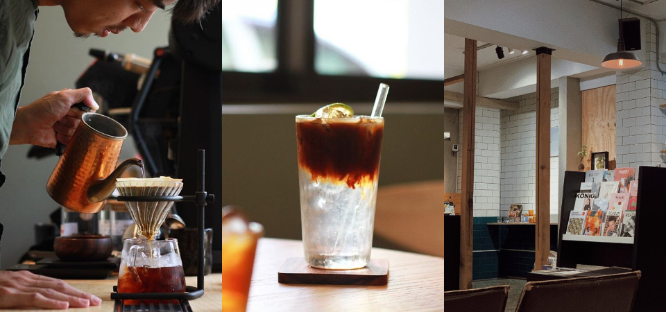
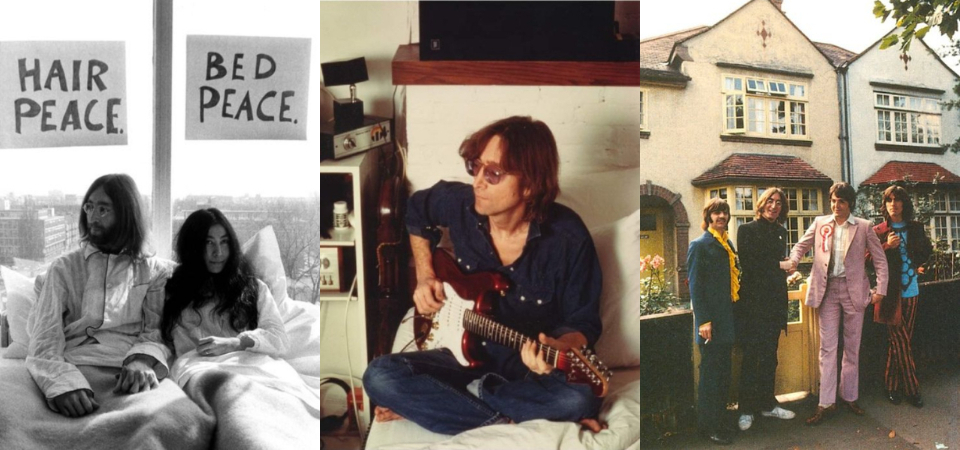
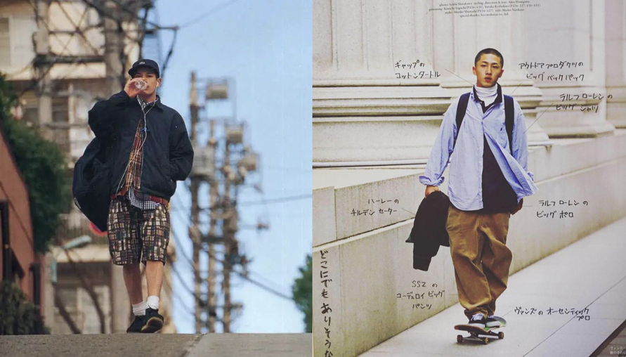
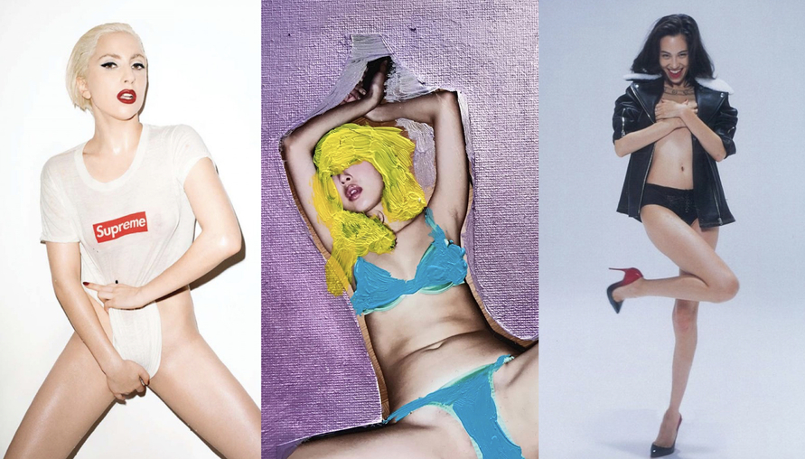
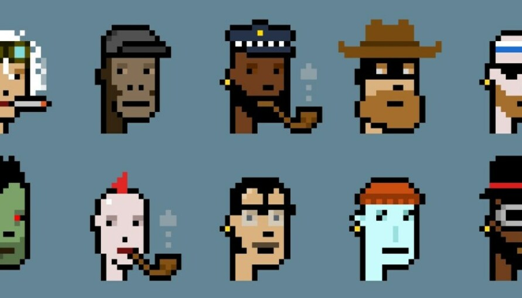
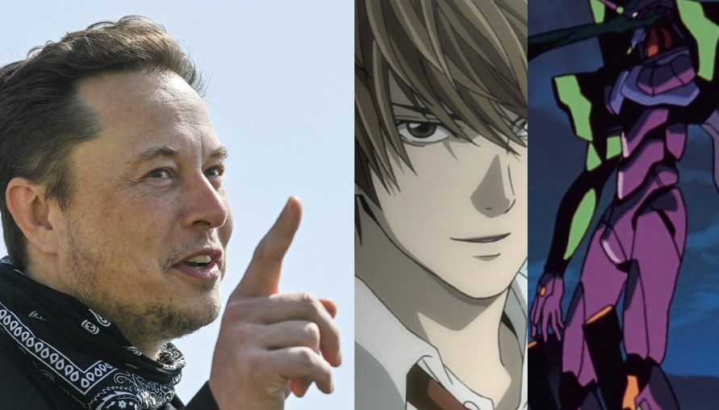
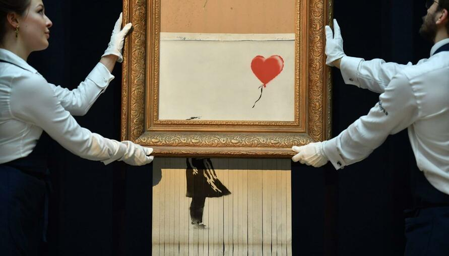
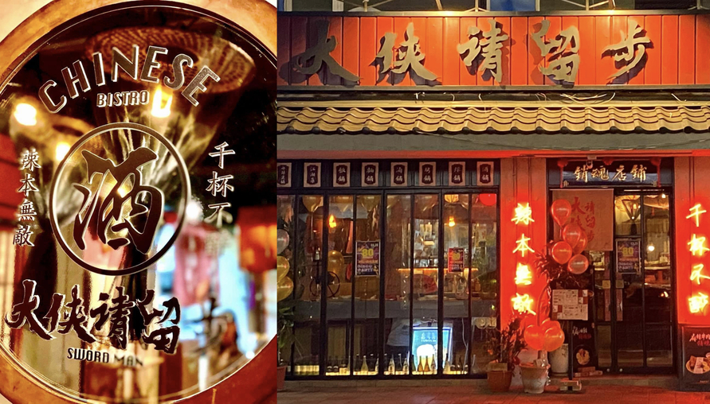

articleS
CONTACT ME
st456915@gmail.com

對咖啡挑惕的你也會滿意！嚴選 3家「台中咖啡廳」，一本好書一杯手沖咖啡就是完美午後⋯⋯
國外旅遊網站 Big 7 Travel 於 2020 年初，公佈了「25 家台灣最棒的咖啡館」名單，精選了獨具台灣風味、特色的咖啡館，更引起一波朝聖的熱潮。此次 Dappei 特別推薦台中私藏「榜單外」的三間咖啡廳精選，提供給來到台中並且熱愛咖啡的朋友新的好去處和選擇，不論是想喝咖啡、想放鬆、想談天說地的你，趕快把下面這幾間咖啡廳加入到你的口袋名單吧！
Learn more

有種搖滾叫做愛與和平，傳奇人物「約翰藍儂」用音樂撫平時代傷痛，動盪的時刻我們都需要一首約翰藍儂
《約翰藍儂》收錄於五月天《神的孩子都在跳舞》專輯中的，第一段唱著便唱著「那年冬天子彈它給了你自由，沒了軀殼，就活在人們心中。」致敬偉大的他，約翰藍儂。作為史上最偉大、最有影響力的搖滾樂團「披頭四 The Beatles」的重要成員之一，同時也是詩人、藝術家、社會運動者、反戰主義者⋯⋯
Learn more

街頭風當道！結合日式休閒與美式街頭潮流精華的「CITY BOY」你一定要認識，橫跨50年經典帶你看！
從去年疫情爆發開始，人們待在家裡的時間變得越來越長，不過，你是否發現時間一久，慢慢鬧起了片荒，該看的動畫似乎都看得七七八八了呢？別擔心，近日特斯拉執行長馬斯克（Elon Musk）就在 Twitter 上回應鄉民「必看或者個人喜愛的動畫片單」的問題，還特地推薦了「七部」必看神作，說不定人生成功的秘訣就藏在裡頭，咱們就一起看下去吧！
Learn more

老司機必追！盤點「5位」當代世界級情色攝影大師，捕捉「性」挑逗的瞬間，用性感、私密、情色滿足你的心
「情色」攝影更是最具神秘而富有爭議的題材，先不論其藝術價值，普通如我輩，在看到這樣的「美景」也會有所感觸、臉紅心跳或感嘆構圖之美，絕對是普羅大眾在熱愛不過的主題！那麼這些叱吒全球藝術圈、時尚圈的情色攝影大師們又是如何成就美景的呢？又有哪幾位是老司機們絕不可錯過的「情色攝影大師」？
Learn more

余文樂、吳建豪、Stephen Curry都在課金！盤點「五個」又潮又值錢的NFT項目，再跟不上就落伍了！
2021年稱得上是NFT大年，相關新聞消息佔據全球媒體版面，各大品牌集團、藝術家、表演團體等等爭相加入戰局，拍賣交投屢創新高，誰又曾能想像一張「jpg圖檔」能賣出數億台幣天價？這片市場大海彷彿無窮無盡，為此，小編也在這茫茫市場大海之中，盤點了幾項「又潮又值錢」的NFT項目，火熱程度就連你喜愛的藝人或球員都忍不住！這回就跟著我們一起來認識它們吧：
Learn more

居家時間太長鬧動畫「片荒」！讓特斯拉執行長Elon Musk 帶你看「7部」動畫神作！成功秘訣該不會都藏在這裡面
從去年疫情爆發開始，人們待在家裡的時間變得越來越長，不過，你是否發現時間一久，慢慢鬧起了片荒，該看的動畫似乎都看得七七八八了呢？別擔心，近日特斯拉執行長馬斯克（Elon Musk）就在 Twitter 上回應鄉民「必看或者個人喜愛的動畫片單」的問題，還特地推薦了「七部」必看神作，說不定人生成功的秘訣就藏在裡頭，咱們就一起看下去吧！
Learn more

Banksy 3 年前拍賣場自毀作品《Girl with Balloon》震驚全球，今再登蘇富比升價三倍？
2018 年，知名英國街頭藝術家 Banksy 的作品《 Girl with Balloon 》在倫敦蘇富比拍賣會拍出過千萬港元，在拍賣鎚敲響的那一刻，畫框響起警報，畫作立馬被內藏的碎紙機破壞，成為拍賣史上首例，拍板售出後立刻銷毀的作品。如今，這幅「自毀」的作品將在三年後重新浮上檯面，重返蘇富比拍賣會⋯⋯
Learn more

大俠不只愛吃漢堡包！士林絕贊臺式居酒屋「大俠請留步」，武林特色美食都在這！
「人在江湖飄，哪有不挨刀」，此話不假，無論你多麽成熟老練，總得經歷過幾次人生的不順遂。事過境遷，回首江湖已遠，往事已惘然，總得回家吃晚飯吧？位在士林商圈附近的「大俠請留步」，正是一個適合大家大談江湖事、閒話家常的好所在。
Learn moreCopyright © 2022 Yen-Po Huang ｜ All rights reserved.